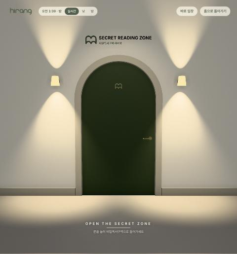
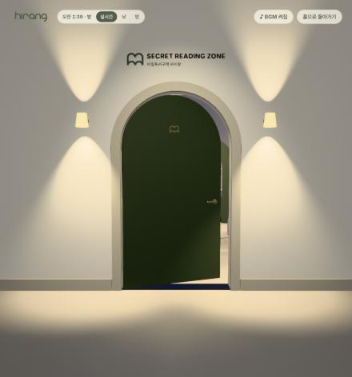
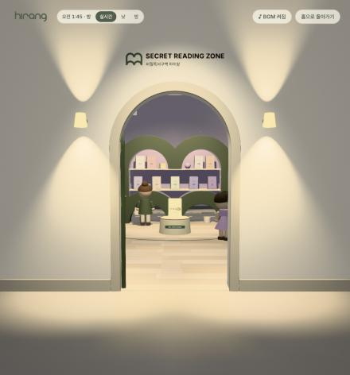
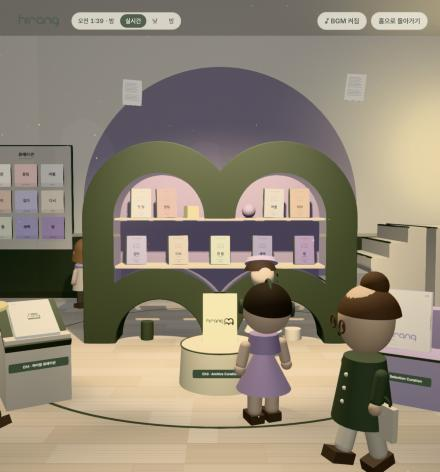
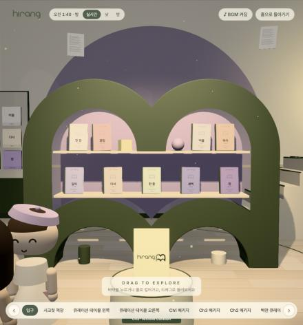
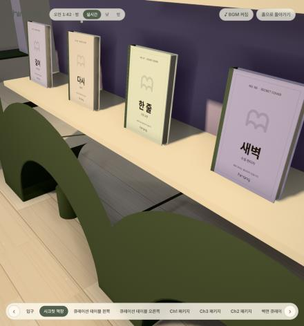
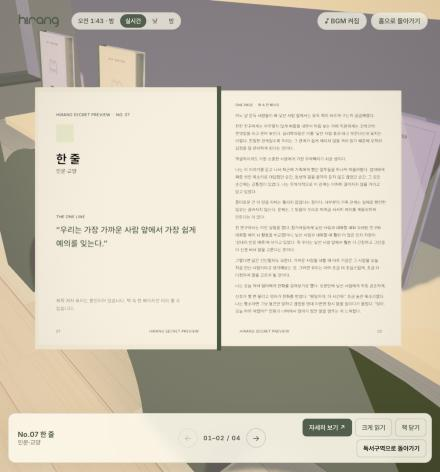
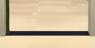
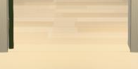

비밀독서구역 공간 계획 — 한 문, 한 방, 하나의 세계
기존 Three.js 공간(experience/)을 실제로 실행하고 좌표를 측정해 만든 평면도와 카메라 시점입니다. 문과 방은 이미 하나의 좌표계 안에 있고, 문을 열 때 페이드·순간이동·장면 교체는 없습니다. 이 문서는 그 위에서 끊김을 만드는 지점과, 고칠지 결정이 필요한 항목을 정리합니다.
1. 평면도 (위에서 본 모습)
- 카메라 경로 — 문 밖 (0, 1.58, 4.9)에서 출발해 문 중앙을 일직선으로 지나 (0, 1.38, −1.0)에 멈춤. 시선은 문 중앙 → 셸프 중앙(0, 1.2, −5.2). 회전 없음.
- 문턱 — 벽 두께 24cm 구간에 바닥이 없어 검은 띠가 보였음. 이번에 문턱을 깔아 수정 완료.
- 문 — 폭 1.30m, 높이 2.36m(아치), 두께 5cm. 왼쪽 경첩 축으로 안쪽 100° 회전. 손잡이를 먼저 돌리고(예비 동작) 1.8초 동안 가속·감속.
- 비워 둘 시선 통로(제안) — 입장~첫 구도 동안 관람객이 서지 않을 구간. |x| < 0.55m, z −0.3 ~ −4.7.
- 문제 지점 — 관람객 이동 길·서는 자리가 카메라와 셸프 사이에 있음. '시크릿 책장' 관람 지점이 셸프 0.8m 앞 비스듬한 자리.
- 보조 요소 — 큐레이션 테이블 2개(책 01–05 / 06–09), Ch1·Ch2·Ch3 패키지 받침, 벽면 큐레이션 보드, 계단.
2. 핵심 시점 (현재 상태 캡처)
문 열림 타임라인을 멈춘 채 같은 순간을 찍었습니다. 화면은 800×858(정사각형에 가까운 창), 데스크톱 렌더링 경로.

유지

한 좌표계 확인

수정 완료

관람객이 시야를 가림

기준 이미지 필요

9권 전체가 안 보임

유지
문턱 틈 전·후


3. 감사 결과 — 요청하신 7가지 질문
| 질문 | 확인한 사실 |
|---|---|
| 문 구현 | js/world/door.js — 벽에 아치 구멍을 뚫고 두께를 준 실제 형상. 문짝은 경첩 피벗(pivot, x −0.65)에서 rotation.y로 회전. 손잡이 앞뒤, 경첩 3개. |
| 같은 좌표계? | 예. 문(doorway)과 방(room, z −0.12 ~ −7.8)이 한 씬에 처음부터 함께 있음. |
| 카메라 이동 | main.js openDoor()의 GSAP 타임라인 하나: 손잡이 0.58s → 문 1.8s → 문이 약 74% 열린 시점부터 3.2s 직진(power2.inOut). 도착 후 CameraRig 걷기 모드. |
| 페이드·순간이동? | 입장에는 없음. 페이드는 '나가기'(웹사이트로 이동)에만 있음. 조명 구역 전환은 카메라 뒤에서 일어남. |
| 9개 큐레이션 위치 | 심볼 셸프(z −5.13): 01–04 두 아치 안, 05–09 아래 칸. 같은 책이 테이블 2개(01–05 / 06–09)와 벽 보드 3×3에도 있음. 어디서 골라도 같은 책이 열림. |
| 읽기 인터랙션 | 책 선택 → 카메라 앞으로 → 펼침(4면: 인트로+한 줄 | 원문 한 페이지 | 끝 | 빈 면). '책 닫기', '독서구역으로 돌아가기'로 원래 시선 복귀(snapshot/restore). |
| 렉 원인(측정) | 아래 4장 표. |
4. 성능 측정
Mac 데스크톱 경로, 방 안 첫 구도에서 측정. 이 화면에서는 60fps를 유지하므로, 문제는 휴대폰·태블릿에서 커지는 항목입니다.
| 항목 | 측정값 | 판단 |
|---|---|---|
| 프레임당 그리기 호출 | 약 1,865 | 메쉬 460개·재질 430개(대부분 1:1). 휴대폰 CPU 병목의 1순위. |
| 텍스처 총량 | 59 MP ≈ 240 MB | ch2-art.jpg 4096², ch1-art.jpg 2048×4096이 절반 이상. 휴대폰 메모리 압박. |
| 그림자 조명 | 2개 | 이미 몇 프레임마다 한 번만 갱신. |
| 조명 | 10개 켜짐 | 구역별 켜고 끄기 이미 적용. |
| 셰이더 프로그램 | 81 | 로딩 중 미리 컴파일 중. 휴대폰에서 시작이 몇 초 걸리는 원인. |
| 화면 밀도 | DPR 2 (데스크톱) | 휴대폰 LITE는 이미 1.75 상한. |
5. 결정이 필요한 항목
기존 인계 문서에는 "문 열림 모션·카메라 구도·배치를 바꾸지 말 것"이라는 원칙이 있습니다. 새 요청서와 겹치는 부분은 바꾸기 전에 확인받겠습니다.
A. 문턱 통과 속도
지금은 문 앞 2~3m 구간에서 초속 4.7m로 달려 들어갑니다(사람 걸음의 약 4배). 요청서의 "천천히, 통제된 전진"과 다릅니다.
제안: 문 열림(손잡이·경첩·1.8초)은 그대로 두고, 카메라 이동만 3.2초 → 약 5.5초로 늘려 최고 속도를 초속 1.5m 안팎으로. 경로·도착 지점은 동일.
B. 관람객이 첫 구도를 가림
관람객이 걷는 길과 서는 자리 5곳이 카메라와 셸프 사이에 있어, 입장 순간 머리·몸이 화면 아래를 덮습니다.
제안: 입장~첫 구도 동안만 관람객을 평면도의 라벤더 통로 밖(테이블·패키지 쪽 자리)에 두고, 탐색이 시작되면 원래대로. 관람객 디자인은 그대로.
C. '시크릿 책장' 관람 지점
셸프 0.8m 앞 비스듬한 자리라 9권 중 4권만 보입니다.
제안: 셸프 정면 약 2.2m에서 9권과 두 아치가 한 화면에 들어오게. 정확한 거리는 기준 이미지로 정함.
D. 첫 실내 구도 — 기준 이미지 대기
요청서대로 새 기준 이미지를 받기 전에는 첫 구도(z −1.0, 시야 50°)를 확정하지 않았습니다.
기준 이미지를 주시면 그 화면에서 카메라 최대 후퇴 거리와 셸프 크기를 역산해 맞춥니다.
E. 휴대폰 성능
그리기 호출·텍스처 메모리가 휴대폰 렉의 측정된 원인입니다.
제안: (1) 휴대폰 경로에서만 패키지 원화 최대 2048px — 데스크톱은 그대로. (2) 같은 색·재질의 정적 메쉬 재질 공유·합치기로 그리기 호출 축소. 실제 안드로이드 기기 측정은 사용자 확인 필요.
F. Higgsfield 사용
공간 검증은 실제 Three.js 장면을 직접 렌더한 위 캡처가 정확하고 무료라 크레딧을 쓰지 않았습니다(보유 610).
영상 참고용 시점(Deliverable 04)은 공간 승인 후 이 캡처를 기준으로 만듭니다. 예상: 이미지 1장 0.25~2, 영상 1개 약 35 크레딧 — 실행 전 다시 확인받습니다.
6. 바뀐 파일
| 파일 | 변경 |
|---|---|
experience/js/world/door.js | 문턱(sill) 메쉬 1개 추가 — 문 폭 × 벽 두께, 몰딩색, 윗면 y 0.0015. |
backups/before-spatial-20261107/ | 수정 전 experience/ 전체와 HANDOFF.md 백업. |
experience/review/ | 이 문서와 시점 캡처. |